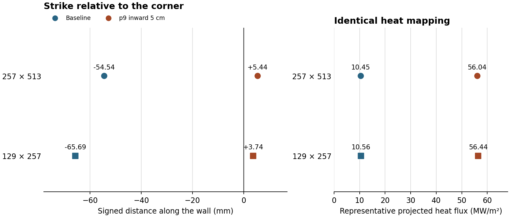
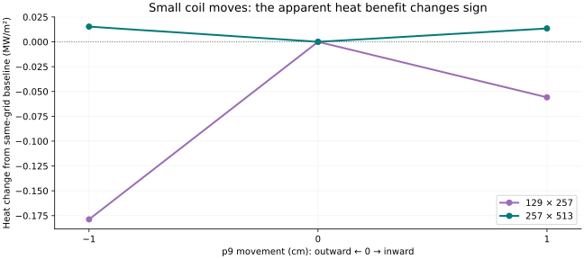
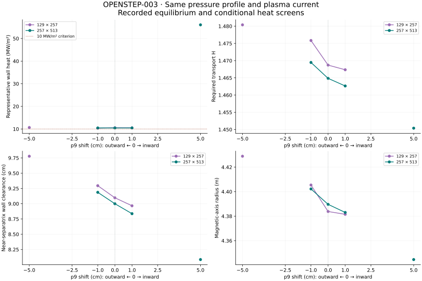

Each accepted field meets the original 1e−5 residual threshold and the pressure/current constraints.
OPENSTEP-003 · CONTROLLED COIL SCAN · 21 NOV 2026
Small moves.
Fixed operating point.
Move both p9 packs by 1, 2.5 or 5 cm in either direction. Hold the pressure profile, total plasma current and coil currents fixed, then compare the magnetic response and projected wall heat.
These are recorded equilibrium and reduced heat-load calculations. Full MHD, wall feedback, turbulent transport, detachment and component qualification remain unresolved.
Failed attempts stay in the record. Numerical acceptance does not establish physical feasibility.
The decision rule checks heat reduction against grid differences and checks confinement and clearance tradeoffs.
Loading recorded results…
OPENSTEP-010 · The 5 cm shift crosses a wall corner
At the same 1 mm upstream launch, moving both p9 packs 5 cm toward the midplane shifted the strike from face 12 to face 13 on both grids. The coarse-grid strike landed 3.74 mm past the corner and the fine-grid strike landed 5.44 mm past it. The projected heat flux rose about 5.35-fold.

The archived Fiesta baseline hit face 12, 2.04 mm from the local fine-grid baseline. A matched Fiesta solve for the displaced case remains open.
Small apparent gains do not survive refinement
Both 1 cm movements lower representative heat on the coarse grid and raise it slightly on the finer grid. The differences remain unresolved under the frozen grid-comparison rule.

The complete sweep
Negative movement is away from the midplane; positive movement is inward. The representative heat case uses a 1 mm upstream offset, 6 mm heat-flux width, 50% SOL radiation and 25% of the power on one target. It does not predict detachment or the true peak heat load. Plot gaps mark unaccepted or unrun cases.

Explore the recorded fields
Select an accepted field. Unresolved solves remain visible in the table.
| Movement | Axis R (m) | Heat (MW/m²) | Required H | Wall clearance (cm) | Trace checks |
|---|
How a candidate qualifies for another grid
A candidate must reduce representative heat by more than the observed refinement differences, reduce the maximum sampled load, and show no resolved deterioration in clearance or required confinement. A candidate meeting this exploratory rule is refined again before its ranking is reported. A criterion is not established when a required grid result is missing. This is not a reactor design approval.
| Movement | Resolved heat reduction | Lower sampled maximum | Clearance criterion | Confinement criterion | Promising |
|---|
Failures and unresolved physics
All complete solves, failed attempts, warm-start hashes and convergence histories are recorded. Read the numerical recovery record.